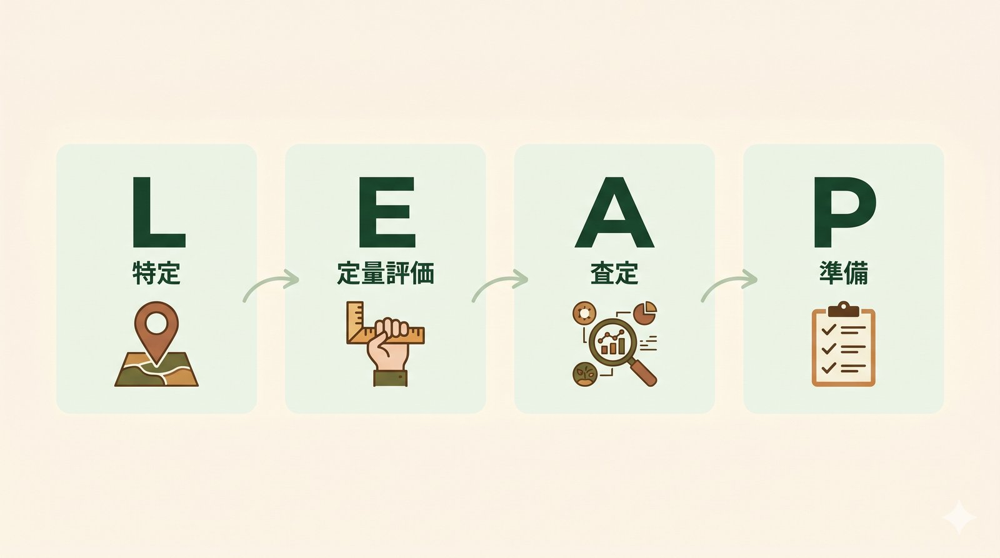
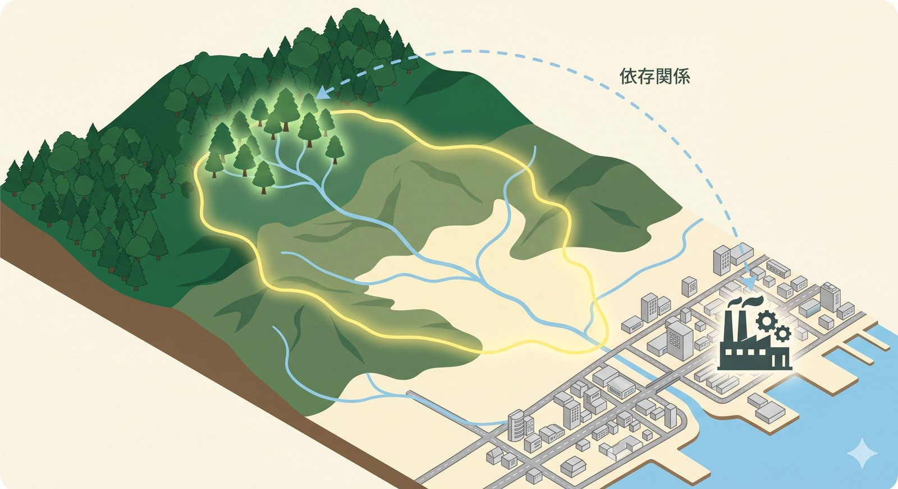

TNFD · Forest · Practical Guide
Forest dependency and impact reach every water-intensive sector — manufacturing, food & beverage, semiconductors, housing, finance. We walk through how to measure and disclose them step-by-step against the TNFD LEAP framework, with concrete data sources for global and India deployments.
TNFD (Taskforce on Nature-related Financial Disclosures) released its v1.0 recommendations in September 2023. Since 2024, it has been adopted by hundreds of multinationals, regulated funds, and ESG investors as the de facto standard for the "nature" counterpart to TCFD.
TNFD covers five realms (land, freshwater, ocean, atmosphere, biosphere), but for most companies, forest is the single heaviest realm. Three reasons:
In Japan, the Forestry Agency of Japan published Guidelines for forest-related nature disclosure in April 2025, explicitly mapping the country's forest dataset to TNFD's 14 disclosure items. This article is structured around that mapping, with global data sources substituted where readers are operating outside Japan.
The Japan guidance is helpful because it converts TNFD's 14 abstract disclosure items into specific, measurable forest functions. The same conversion table works internationally with local data swaps:
| Function category | Concrete indicator | Primary data source |
|---|---|---|
| Water yield | Annual recharge volume (mm/yr · t/yr) | Simplified water balance · satellite |
| Climate mitigation (CO₂ absorption) | Annual sequestration (t-CO₂/yr) | IPCC AFOLU Tier 2, national inventory, Sentinel-2 |
| Landslide / erosion control | Erosion-prevented volume, slope risk | DEM, precipitation |
| Biodiversity | Vegetation type, IUCN-listed species, protected-area overlap | National vegetation surveys, IUCN, KBA |
| Timber supply | Standing volume, mean annual increment (MAI) | National forest inventory, airborne LiDAR |
TNFD recommends the LEAP approach as the implementation pattern. For forests, the same four steps apply.

LEAP's first step requires geographically pinning the touchpoints between your business and nature. For forests, three categories matter most:
Category 1 is the largest by volume and the hardest for companies to identify on their own. Tracing from "factory address" → "which river basin?" → "which upstream forests?" requires watershed matching: a geospatial join between an address and its catchment.
morimieru offers free watershed matching at HydroBASINS Lvl 10 resolution (global coverage, ~100 km² average basin). Enter an address and you get the catchment and upstream stands in one click — completing the Locate step for water-related forest exposure.

With Locate done, you quantify the magnitude. The three indicators below cover the bulk of forest-related TNFD disclosure.
Compute annual water yield for the upstream forests of each water-intake point. Methods range from the Forestry Agency of Japan's simplified evaluation method Ver.1.0 (March 2026) to academic water-balance models. The simplified method needs only precipitation, temperature, elevation, geology, and forest area — all available globally from free sources. See our water-yield guide (JP) or the forthcoming English version for the full walkthrough.
A typical disclosure sentence: "X% of our annual water withdrawal originates from forest Y in basin Z."
Apply IPCC AFOLU Tier 2 with national species-level coefficients. In Japan, the Forestry Agency publishes Tier 2 values per major species (sugi, hinoki, broadleaf). In India, the Forest Survey of India's regional volume tables play the same role. See the satellite × CO₂ Tier 2 article (JP) for the implementation. Sentinel-2 NDVI determines forest area; IPCC formula does the rest.
Overlay national vegetation maps and IUCN Red List / Key Biodiversity Area (KBA) polygons on your located forests. In Japan, the Ministry of Environment Natural Environment Survey maps provide the vegetation layer; in India, the FSI India State of Forest Report does the same. TNFD asks you to report not only your dependency but also your impact on biodiversity — your contribution to land-use change and species risk.
Translate the magnitudes from Evaluate into financial / strategic implications.
| Category | Example forest risks and opportunities |
|---|---|
| Physical risk | Upstream forest degradation → reduced or contaminated water supply, flooding |
| Transition risk | Tightening forest-conservation regulations, investor downgrade for non-disclosure |
| Opportunity | Brand-grade forest investment, ESG-bond eligibility, supply-chain resilience |
| Systemic | Climate-driven shifts in regional hydrology that threaten the entire sector |
TNFD outputs land in your annual report, integrated report, or sustainability report. For the forest section, the guidance specifically recommends:
"Change tracking" is the part that TNFD will increasingly tighten as MRV (Monitoring, Reporting, Verification) standards mature. Starting the time-series record early — even before disclosure is mandatory — pays compounding returns.
| Year | Milestone | How morimieru helps |
|---|---|---|
| Year 1 | Locate complete: dependency-forest registry | Watershed matching auto-generates the registry |
| Year 2 | Evaluate: first quantitative disclosure of water & CO₂ | Simplified water-balance + Tier 2 CO₂ computed end-to-end |
| Year 3 | Assess + Prepare: risk/opportunity, financial translation, annual-report disclosure | Year-over-year time-series differencing tracks change |
For Indian companies and Indian operations of multinationals, three additional considerations:
Last updated 2026-05-26. Based on public materials from the Forestry Agency of Japan and TNFD, organized by morimieru.